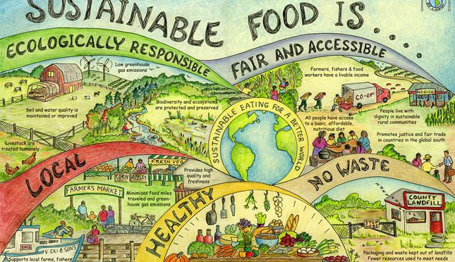

Social and Environmental Sustainability
Millennials increasingly care about where their food comes from. This is basically about sustainable agriculture. In simplest terms, sustainable agriculture is the production of food, fiber, or other plant or animal products using farming techniques that protect the environment, public health, human communities, and animal welfare. This form of agriculture enables us to produce healthful food without compromising future generations' ability to do the same.
The primary benefits of sustainable agriculture are:
Environmental Preservation
Sustainable farms produce crops and raise animals without relying on toxic chemical pesticides, synthetic fertilizers, genetically modified seeds, G or practices that degrade soil, water, or other natural resources. By growing a variety of plants and using techniques such as crop rotation, conservation tillage, and pasture-based livestock husbandry G, sustainable farms protect biodiversity and foster the development and maintenance of healthy ecosystems.Protection of Public Health
Food production should never come at the expense of human health. Since sustainable crop farms avoid hazardous pesticides, they're able to grow fruits and vegetables that are safer for consumers, workers, and surrounding communities. Likewise, sustainable livestock farmers and ranchers raise animals without dangerous practices like use of nontherapeutic antibiotics G or arsenic-based growth promoters. Through careful, responsible management of livestock waste, sustainable farmers also protect humans from exposure to pathogens, toxins, and other hazardous pollutants.
Sustaining Vibrant Communities
A critical component of sustainable agriculture is its ability to remain economically viable, providing farmers, farmworkers, food processors, and others employed in the food system with a livable wage and safe, fair working conditions. Sustainable farms also bolster local and regional economies, creating good jobs and building strong communities.
Upholding Animal Welfare
Sustainable farmers and ranchers treat animals with care and respect, implementing livestock husbandry practices that protect animals' health and wellbeing. By raising livestock on pasture, these farmers enable their animals to move freely, engage in instinctive behaviors, consume a natural diet, and avoid the stress and illness associated with confinement.
Source: Grace Communications Foundation